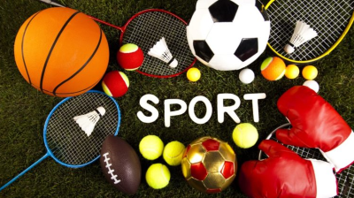
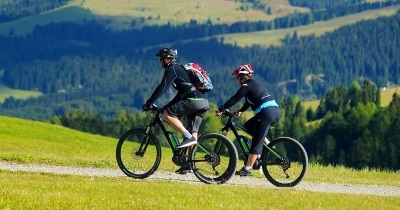

Sport
A sport mindig is fontos szerepet töltött be az életemben. Kisgyermek korom óta számos sportágat volt lehetőségem kipróbálni.
De mi is az a sport?

A sport meghatározott célú mindennapos tevékenység, a mindennapoktól különböző környezetben; célja a testedzés, versenyzés, a szórakozás, eredmény elérése, a képességek fejlesztése. A kitűzött cél határozza meg a sport jellegét, a sportoló (vagy csapat) képességei és bátorsága mellett. A sport kifejezés az angolba származott francia „desporter” (mulatságoknak élő) szóból származik. Az angolban a 15. század közepe táján fordul elő először „szórakozás, időtöltés” értelemben. A 16. században már különféle játékok játszására alkalmazták, de főleg a szabadban végzett szabadidős tevékenységekre. Ekkor még sem a görög αγων (agón, verseny, mérkőzés), sem az αθλον (athlon, küzdelem díjért) jelentéseit nem értették bele

Cras semper neque dolor, id semper leo dapibus sagittis. Vestibulum accumsan in metus sit amet luctus. Etiam porttitor pharetra mi, quis finibus enim elementum eget. Duis in luctus lacus. Vestibulum lacinia felis ut lorem placerat pharetra. Proin tristique mauris quis lobortis hendrerit. Sed id aliquet nulla, ac euismod ipsum. Donec gravida imperdiet est at iaculis. Donec tincidunt vestibulum finibus. Aliquam congue diam ut ligula feugiat fringilla. Donec venenatis ex leo, eget molestie mauris vulputate tincidunt. Nunc rutrum lacus eget eleifend tincidunt. Etiam quis neque vel ligula porttitor.
Sed elit nisl, posuere malesuada imperdiet in, commodo sit amet diam. Proin vitae rutrum ligula. Nunc pretium rutrum scelerisque. Sed mauris lectus, consequat sed nunc eu, tincidunt vulputate quam. Donec ac aliquet quam. Donec egestas mauris sem, ut tempus lorem elementum ac. Sed euismod non diam faucibus sagittis. In non sapien velit. Aenean sed gravida nisi. Sed finibus dui at mi finibus faucibus. Cras sed ullamcorper magna. Etiam et erat felis. Quisque dapibus efficitur lacus, non fermentum sem scelerisque quis.